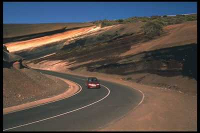
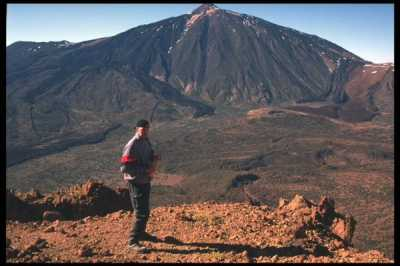
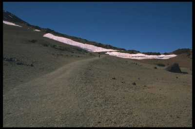
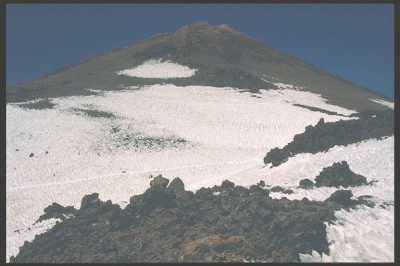
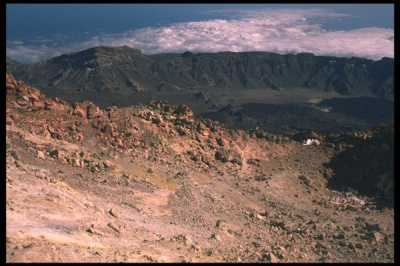
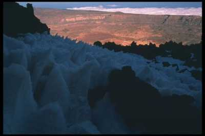

| Home | Kontakt | Steckbrief |
| Wandern/Trekking |
| Klettern/Klettersteige |
| Kanu |
| Fahrradtouren |
|
| Rucksack-Reisen |
| Touren mit Kindern |
| Wissenswertes |
Tourbericht Teneriffa mal andersUnser Ziel war es Teneriffa auf eingene Faust zu erkunden, ohne von einem fest gebuchten Hotel abhängig zu sein. Wir buchten also nur den Flug und für die erste von zwei Wochen einen Mietwagen, um etwas mobiler zu sein. Für die zweite Woche hatten wir die Besteigung des Teide, der mit 3718m höchste Berg Spaniens vorgenommen. Übernachtet haben wir im Zelt, meistens im Teide Nationalpark auf 2000m Meereshöhe und einige Tage in einem kleinen Hotel in Vilaflor in 1495m Höhe. Die hohen Übernachtungen sollten als Akklimatisierung für den Gipfeltag dienen. Lavaschichten im Teide Nationalpark In der ersten Woche unternahmen wir einige Tageswanderungen im Anaga Gebirge, bei der Masca Schlucht zur Finca des Guerdes und im Teide Nationalpark auf. Desweiteren erforschten wir die weiter entfernt liegenden Ecken der Insel und legten ein Wasser und Lebensmitteldepot in der Canadas nahe der Talstation der Teideseilbahn an. Dieses Depot war für unsere dreitägige Teidetour wichtig, da es im Nationalpark keine Möglichkeit gibt an Trinkwasser zu kommen. Nachdem wir den Mietwagen beim Verleiher zurückgebracht hatten führen wir ins 1495m hoch gelegene Vilaflor und quartierten uns in einer kleinen Pension ein.  Am Gipfel des Guadelajara (2700m) unten die Canada(2200m) und im Hintergrund der Teide (3718m) Von dort ging es früh morgens los. Unser erstes Ziel war die Mondlandschaft. Eine merkwürdige Gesteinsformation, die angeblich wie Mondgestein aussehen soll. Dann ging es weiter an der dem Meer zugewandten Seite des Kraterrandes hinauf zum Guadelajara, dem mit 2700m höchsten Punkt des Kraterrandes. Beim Aufstieg war es besonders an den Stellen mit fast schwarzer Lava sehr heiß. Wir standen ca. um 16Uhr auf dem Gipfel. Zur Übernachtung sind wir dann in Richtung Teide in die Canadas abgestiegen und haben auf 2200m Höhe nahe eines ehemaligen Lungensanatoriums übernachtet.  Am Anfang des Aufstiegs zum Teide Am nächsten Tag haben wir dann die Straße, die durch den Nationalpark führt überquert und sind den Weg zum Teide hochgegangen. Anfangs ist der Weg noch sehr breit und flach aber die letzten Höhenmeter zum Refugio de Altavista, einer kleinen Schutzhütte auf 3200m sind sehr steil. Die Hütte war zu der Jahreszeit noch geschlossen, aber der benachbarte Winterraum geöffnet. In den Winterraum sind 8 Doppelstockbetten gequetscht, von denen vier schon belegt waren.  Der Gipfelkrater des Teide Der Gipfeltag erforderte etwas genauere Planung. Offiziell darf man den Teide nicht ohne Genehmigung besteigen. 40m unterhalb des eigentlichen Kraters befindet sich ein befestigter Weg, der für die Seilbahntouristen angelegt worden ist. Auch zum eigentlichen Gipfel gibt es einen befestigten Weg, der von Nationalparkangestellten überwacht wird. Die Genehmigung für die Besteigung bekam man in der Hauptstadt und man benötigte eine Personalausweißkopie. Alles kein Problem. Problematisch war allerdings die Tatsache, daß man das Besteigungsfenster auf 2 Stunden genau angeben mußte. Bei einer dreitägigen Tour eigenlich unmöglich und eigentlich nur für die Seilbahnfahrer machbar. Da wir wußten, daß die Nationalparkangestellten nur von 9 Uhr morgens bis 18 Uhr abends vor Ort sind, da sie die erste und letzte Seilbahn nutzen, kam also nur eine Besteigung vorher oder nachher in Frage. Um 18:20 stand ich dann auch auf dem Gipfel, machte ein paar Fotos und verließ diesen nach Schwefelwasserstoff riechenden Ort dann auch bald wieder. Beeindruckend war der Blick auf die Nachbarinseln und die Wolken, die an der Nordseite der Insel klebten.  Blick vom Teidegipfel Richtung Kraterrand Beim Abstieg zur Schutzhütte trafen wir noch auf ein Berliner Päärchen. Der Mann saß zusammengesunken im Schnee und die Frau lief ganz aufgeregt hin- und her. Ihn, mit Lederjacke und Turnschuhen bekleidet, hatte die Höhenkrankheit voll erwischt. Sobald man Ihn aufrichtete, wurde Ihm schwarz vor Augen, Kreislaufprobleme. Gottseidank ist die Bergstation der Seilbahn ständig mit zwei Leuten besetzt und wir konnten dort Hilfe holen. Er wurde zur Bergstation hochgetragen und die Seilbahn wurde für eine Talfahrt nochmals eingeschaltet. Die zweite Nacht im Winterraum der Schutzhütte war schon wesentlich ruhiger. Der Körper hatte sich langsam an die Höhe angepasst.  Büßerschnee beim Abstieg im Sonnenuntergang Am nächsten Morgen ging es dann runter zur Talstation der Seilbahn,
von dort weiter zu einem im Nationalpark befindlichen Hotel und dann per
Bus zurück nach Vilaflor.
ZusammenfassungDie Besteigung des Teide kann ich nur empfehlen. Sie ist technisch unschwierig und man braucht nicht schwindelfrei zu sein. Festes Schuhwerk ist nötig, da die Lava sehr scharfkantig ist. Stellenweise ist das Gehen schwierig, da die lockere Lava einem immer wieder einen halben Schritt bergab rutschen läßt. Nervig, aber umgehbar finde ich die Permissionpflicht für Gipfelgänger.Desweitern störte auf Teneriffa eigentlich nur die ständige Angst vor
Diebstählen. Man sollte den Tip der Autovermieter beherzigen und nichts
im Wagen liegen lassen. Einige empfehlen sogar die Wagentüren unverschlossen
zu lassen, damit Diebe keine Beschädigungen verursachen. Der Wagen wird
auf der Insel nämlich niemals geklaut. Entweder nimmt man nur soviel mit,
wie man per Rucksack tragen kann oder man legt in der Landschaft Materialdepots
an, wie wir es mehrfach gemacht haben.
|